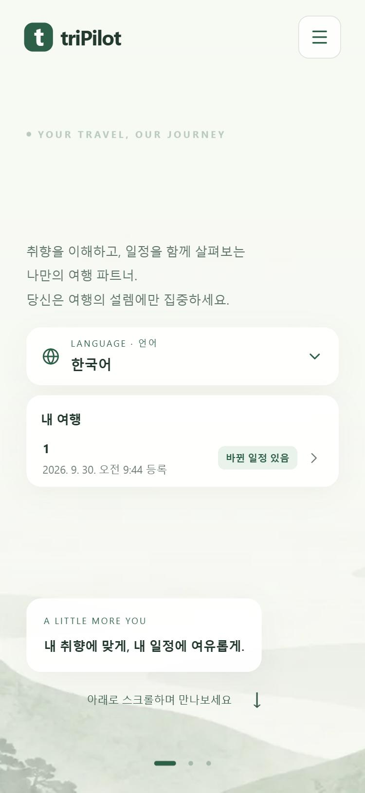
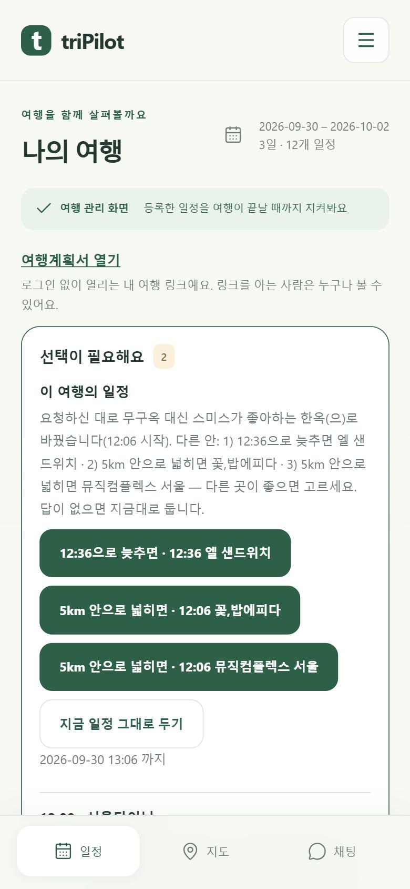
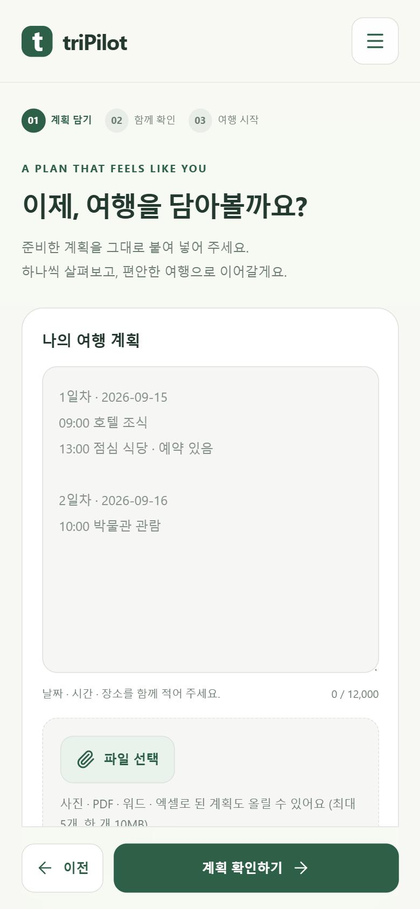
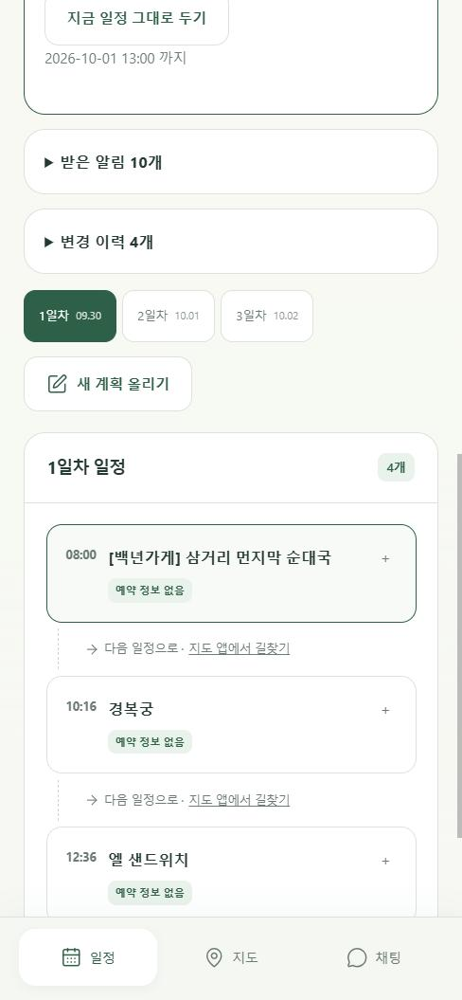
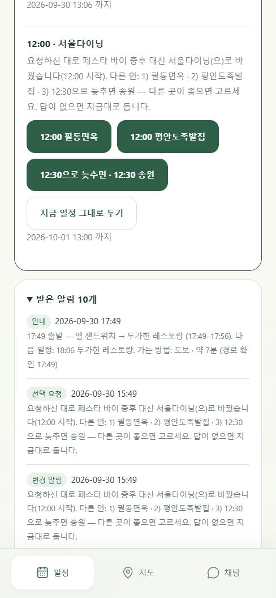
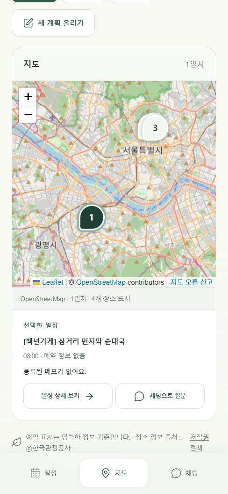
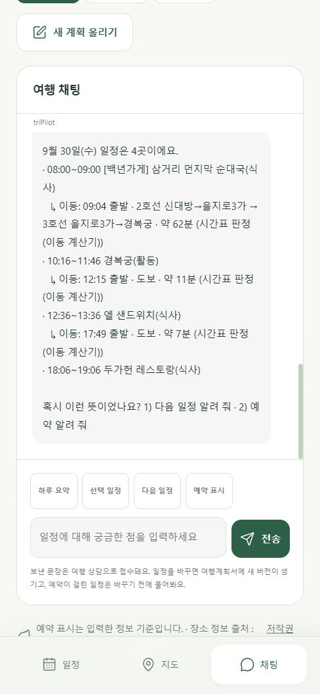

외국인 자유여행자 · 서울 · 최대 7일 · 4인


계획을 세우는 일보다, 여행 중에 깨진 계획을 다시 맞추는 일이 여행자에게 남겨져 있습니다.
triPilot이 대신하는 것이 바로 이 아홉 단계입니다.
계획은 이미 본인이 다 짰습니다. 문제는 여행 중에 깨질 때입니다.



계획이 없으면 짜 주기도 합니다(서울 3일 2인 요청 → 후보 1,779곳 중 12곳을 골라 등록).
| 서비스 | 무엇을 지키나 | 하는 것 | 여행 중 문제가 생기면 | 가격 |
|---|---|---|---|---|
| TripIt Pro | 항공편 | 항공 지연·취소 알림 | 식당·활동 영향 검증은 확인 못 함 | 연 $49 |
| TripMazer | 여행 일정 | 날씨·파업·지연 감시, 재계획 | AI 제안은 약관상 추정치 | — |
| Tripsy | 여행 일정 | 일정 편집(API) | 자동 감지→재제안 흐름은 확인 못 함 | — |
| 토모트래블 (사람) | 여행 전 설계 | 사람이 상담·설계 | 여행 중 실시간 확인은 확인 못 함 | 29,000~249,000원 |
| triPilot | 내 계획 전체 | 식당·활동·이동을 스스로 재확인 | 먼저 고치고 다른 안 3개 + 알림 | 팀당 49,000원 |
「확인 못 함」은 기능이 없다는 뜻이 아니라, 공개 자료와 팀의 직접 시험에서 확인하지 못했다는 뜻입니다. 팀 시험 사례: KAYAK은 추석 롯데마트 서울역점 휴무를 몰랐고, Tripomatic은 트릭아이미술관 영업시간이 틀렸습니다.


전문 에이전트끼리는 직접 부르지 않고 매니저를 거칩니다. 누가 무엇을 바꿨는지가 한 곳에 남습니다.
범위: 서울에서 검증을 마친 뒤 다른 도시로.
질문 받겠습니다.